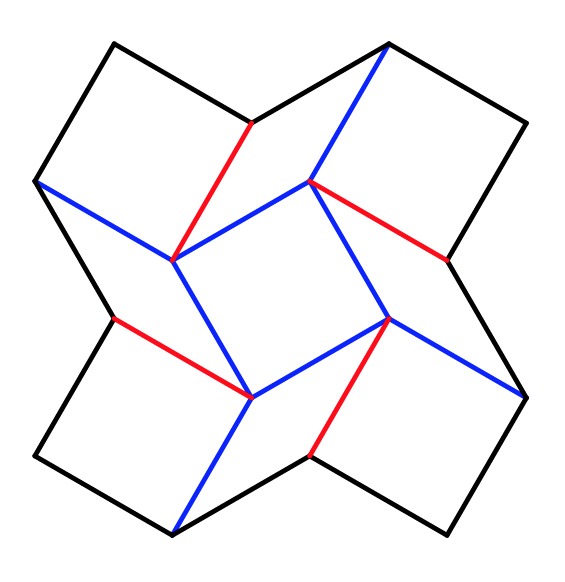
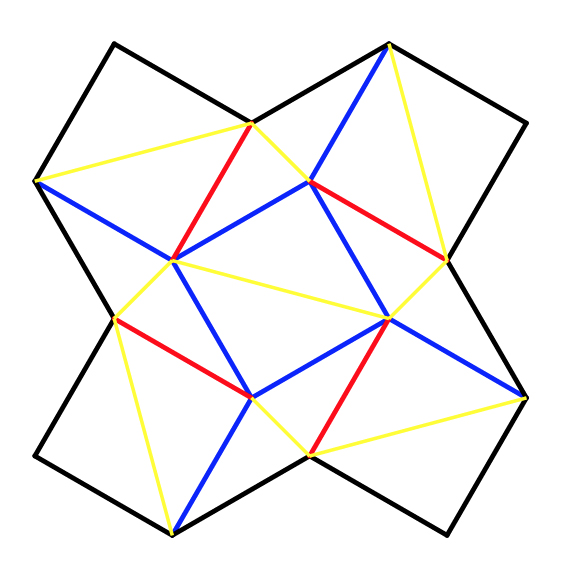

File Import Tips
Bad design files will throw errors and create models that explode or cannot be solved, here are some tips for
importing FOLD or svg files that work.
Importing FOLD:
The FOLD file format is specified in these docs.
This tool imports FOLD v1.0 files with all of the following fields populated:
- vertices_coords
- edges_vertices
- edges_assignment
- faces_vertices
If you are unsure whether your FOLD file is valid, you can inspect it using the
FOLD Viewer.
Importing SVG:
- The SVG importer supports path objects and line objects (coming). Please convert polygons to paths before importing.
- Valley folds are red - rgb(255, 0, 0), hex #ff0000
- Mountain folds are blue - rgb(0, 0, 255), hex #0000ff
- Outline edges are black - rgb(0, 0, 0), hex #000000

- This tool will automatically triangulate regions in the pattern that form polygons with more than three sides.
To control the triangulations draw lines in yellow - rgb(255, 255, 0), hex #ffff00
In general, patterns move better when their triangulation is symmetric and minimizes long, skinny triangles.

- Stroke and line style do not matter.
- The final fold angle of a mountain or valley fold is set by its opacity. For example, 1.0 = 180°
(fully folded), 0.5 = 90°, 0 = 0° (flat). Any fold angle between 0° and 180° may be used.
- This tool should be able to automatically clean files of slightly misaligned vertices, stray vertices,
duplicate lines, and extra vertices falling in the middle of an edge,
but it is recommended to remove these errors yourself in order to avoid problems.
- If your simulation is not working, check that the pattern looks correct by clicking on the "Pattern" view in the top nav bar.
For Adobe Illustrator users:
I use Illustrator to create SVGs (though any vector editing program should be fine), here are some tips I've found for making svgs to import into this tool.
- If you are starting with a pre-made vector file, first ungroup any groups, release all compound paths
(Select all + Object>Compound Path>Release), and release all clipping masks (Select all + Object>Clipping Mask>Release).
- Create geometry using the Line Segment Tool.
- Illustrator can help you select all lines of a particular type so that you can edit their color or opacity together. Click the line,
then go to Select>Same>Appearance to select all similar lines in the pattern.
- To turn lines and polygons into path objects, select the geometry then right click and select Make Compound Path.
- Finally hit Save As and select .svg extension. I'm using the default SVG 1.1 settings, but version 1.0 will work as well.